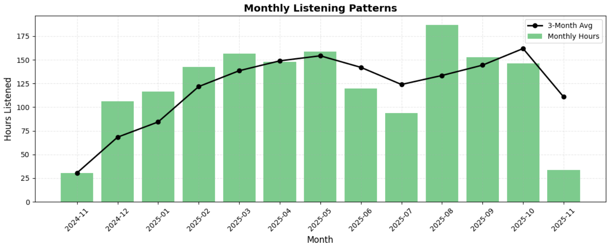
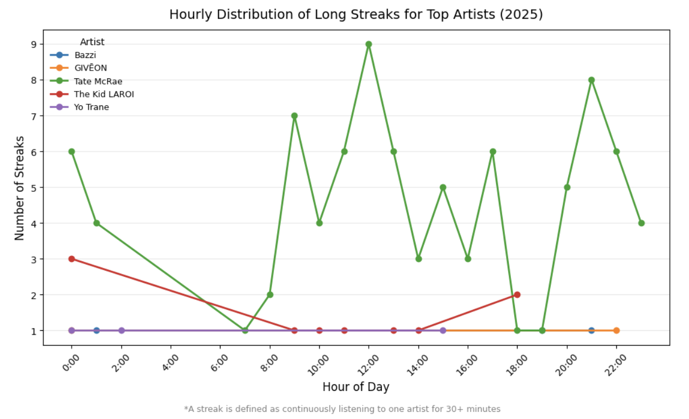

Using PySpark to find patterns in 49,000+ streams
I downloaded a full year of a friend's Spotify streaming history and used it to ask a few questions: what do I actually listen to, when do I skip songs, and when do their longest listening streaks happen? The dataset was too large and messy to explore by hand, so the project became as much about building a clean data pipeline as it was about the music.
The raw export from Spotify was five JSON files with no artist metadata beyond a name and URI, which is not enough to analyze the listening data properly. The pipeline I built added context to the data before the analysis began:
Monthly listening hours, with a 3-month moving average layered on top to smooth out noise.

Hours listened per month, Nov 2024–Nov 2025.
The August spike lines up with the start of school. The low points fall during the summer months, where less studying and academic work is being done. During midterm and finals periods, listening patterns increase again. From a retrospective lens, this type of pattern is obvious, but it is invisible until it is plotted.
For each top artist, I found their longest continuous same-artist "streaks" (30+ minutes of uninterrupted listening) and plotted how many of those streaks started at each hour of the day.

Number of 30+ minute streaks starting at each hour, by artist.
Tate McRae streaks spike hardest around noon and again in the early evening — a peak of 9 streaks starting at 12pm alone — while most other artists never produce more than a single long streak in any given hour. That's the difference between an artist I stream in the background and one I actually sit with.
Before running the numbers, I assumed longer listening sessions would mean fewer skips — more time settled in, less impatience. The data said otherwise.
I also found that the longest same-artist "streaks" (30+ minutes of continuous listening) cluster around very specific hours of the day depending on the artist — one artist consistently shows up in midday and evening streaks, while others only ever appear in short, scattered bursts.
The most interesting part of this project was that a personal, informal dataset like streaming history holds real structure once it's cleaned, partitioned, joined, and windowed properly. Building the session/streak logic with Spark window functions ended up being more valuable practice than any of the individual findings.